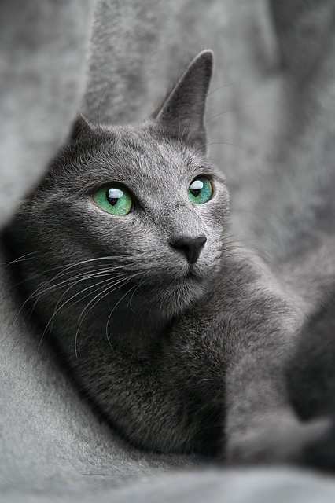

Tamkatt
Katt (Felis catus), även känd som tamkatt, är ett relativt litet, smygjagande rovdjur i familjen kattdjur och ett vanligt sällskapsdjur i stora delar av världen. Antalet katter i världen uppskattas till 600 miljoner. Äldsta kända svenska fynd av vad som sannolikt varit en tamkatt gjordes 2011 i Rasbo i Uppland, och har daterats till 400–200 år f.k.Katten ser sex gånger bättre än en människa i mörker men är liksom vi blinda i totalmörker. En huskatt sover ofta uppemot 16 timmar per dygn. Ungefär 3/4 av den tiden är det fråga om lätt sömn, och katten kan då lätt vakna av till exempel kvittret från en fågel. Den kan springa upp till 50 kilometer i timmen, men bara under korta spurter. En katt kan ofta göra vertikala hopp, från stillasittande, på upp till 2 meter.